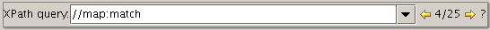

| arrow up |
Select previous node |
| arrow down |
Select next node |
| Escape |
move focus to the editor |
| Ctrl + left arrow |
Collapse |
| Ctrl + right arrow |
Expand |
| Ctrl + Alt + left arrow |
Collapse All |
| Ctrl + Alt + right arrow |
Expand all |
| Space bar |
Toggle collapse/expand |
| Ctrl + C |
Copy selected node |
| Ctrl + X |
Cut selected node |
| Ctrl + V |
Paste (after selected node) |
| Enter |
Moves focus from a node to the node details editor,
i.e. the attribute editor or text node editor |
| o |
moves focus to the 'insert after' list |
| O |
moves focus to the 'insert before' list |
| i |
moves focus to the 'insert inside' list |
The tree-view supports drag-and-drop. Nodes such as elements and comments
can be dragged-and-dropped within the same file or between files. Drag-and-drop
between files can be done in two ways:
It is possible to execute XPath queries in Pollo. If the result of the query is a set of nodes, you can walk through them using the arrow-buttons next to the XPath field. If the result is something like a string or a number, the result is shown in a message dialog.

Pressing the question mark will give you a list of predefined XPath queries.
The most recent queries are remembered, use the drop-down button to access
them.
The XPath support in Pollo uses the Jaxen
library. One ideocracy of Jaxen is that for some types of queries -- especially
ones like '//node-test' -- the resulting nodeset is not always sorted in
document-order.
Pollo supports XML Namespaces. This means that the name of each element and attribute in the document is actually a tupple, consisting of a 'namespace' and a 'local name'. Or practically, it are actually triples: a 'namespace', a 'namespace prefix', and a 'local name'.
Pollo doesn't manage itself the relationship between namespace prefixes and namespaces, which means that you will still need to declare namespace attributes yourself.
Pollo is internally DOM-based. In the DOM each element
or attribute remembers its own namespace, prefix and local name, independent
of the 'xmlns' attributes that you define. This means that if you drag around
nodes in a document (or between documents), to locations where namespaces
prefixes are bound to other namespaces, or where there is no declaration
for the namespace prefix, or there is another default namespace, you may
create an invalid XML document.
You can render the tree view to a jpeg file. First select a node, and
then select Tree | Render as Image in the menubar.